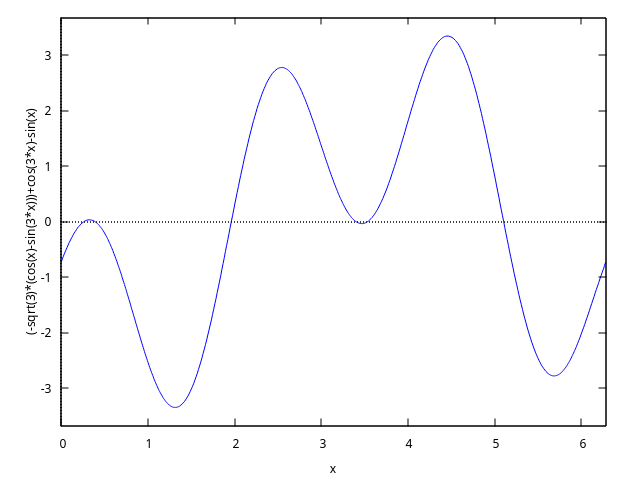

Next: Evaluation of Trignometric Functions, Previous: Factor Sums of sin and cos Functions, Up: Functions and Variables for trigtools [Contents][Index]
96.2.5 Solve Trignometric Equations
- Function: trigsolve (x) ¶
The function trigsolve find solutions of trigonometric equation from interval \([a,b)\) .
Examples:
-
(%i38) eq:eq:3*sin(x)+4*cos(x)=2; (%o38) 3 sin(x) + 4 cos(x) = 2 (%i39) plot2d([3*sin(x)+4*cos(x),2],[x,-%pi,%pi]);

(%o39) (%i40) sol:trigsolve(eq,-%pi,%pi); 2 sqrt(21) 12 2 sqrt(21) 12 (%o40) {atan(---------- - --), %pi - atan(---------- + --)} 5 5 5 5 (%i41) float(%), numer; (%o41) {- 0.5157783719341241, 1.802780589520693}Answ. : \(x = \tan^{-1}\left({2\sqrt{21}\over 5} - {12\over 5}\right) + 2\pi k\) ; \(x = \pi - \tan^{-1}\left({2\sqrt{21}\over 5} + {12\over 5}\right) + 2\pi k,\) \(k\) – any integer.
-
(%i6) eq:cos(3*x)-sin(x)=sqrt(3)*(cos(x)-sin(3*x)); (%o6) cos(3 x) - sin(x) = sqrt(3) (cos(x) - sin(3 x)) (%i7) plot2d([lhs(eq)-rhs(eq)], [x,0,2*%pi])$
We have 6 solutions from [0, 2*pi].
(%i8) plot2d([lhs(eq)-rhs(eq)], [x,0.2,0.5]);

(%i9) plot2d([lhs(eq)-rhs(eq)], [x,3.3,3.6]);

(%i10) trigfactor(lhs(eq))=map(trigfactor,rhs(eq)); %pi %pi %pi %pi (%o15) - 2 sin(x + ---) sin(2 x - ---) = 2 sqrt(3) sin(x - ---) sin(2 x - ---) 4 4 4 4 (%i11) factor(lhs(%)-rhs(%)); 4 x + %pi 4 x - %pi 8 x - %pi (%o11) - 2 (sin(---------) + sqrt(3) sin(---------)) sin(---------) 4 4 4Equation is equivalent to
(%i12) L:factor(rhs(%)-lhs(%)); 4 x + %pi 4 x - %pi 8 x - %pi (%o12) 2 (sin(---------) + sqrt(3) sin(---------)) sin(---------) 4 4 4(%i13) eq1:part(L,2)=0; 4 x + %pi 4 x - %pi (%o13) sin(---------) + sqrt(3) sin(---------) = 0 4 4(%i14) eq2:part(L,3)=0; 8 x - %pi (%o14) sin(---------) = 0 4(%i15) S1:trigsolve(eq1,0,2*%pi); %pi 13 %pi (%o15) {---, ------} 12 12 (%i16) S2:trigsolve(eq2,0,2*%pi); %pi 5 %pi 9 %pi 13 %pi (%o16) {---, -----, -----, ------} 8 8 8 8 (%i17) S:listify(union(S1,S2)); %pi %pi 5 %pi 13 %pi 9 %pi 13 %pi (%o17) [---, ---, -----, ------, -----, ------] 12 8 8 12 8 8 (%i18) float(%), numer; (%o18) [0.2617993877991494, 0.3926990816987241, 1.963495408493621, 3.403392041388942, 3.534291735288517, 5.105088062083414]Answer: \(x = a + 2\pi k,\) where \(a\) any from \(S\), \(k\) any integer.
-
(%i19) eq:8*cos(x)*cos(4*x)*cos(5*x)-1=0; (%o19) 8 cos(x) cos(4 x) cos(5 x) - 1 = 0 (%i20) trigrat(%); (%o20) 2 cos(10 x) + 2 cos(8 x) + 2 cos(2 x) + 1 = 0
Left side is periodic with period \(T=\pi\) .
We have 10 solutions from [0, pi].
(%i21) plot2d([lhs(eq),rhs(eq)],[x,0,%pi]);

(%i22) x4:find_root(eq, x, 1.3, 1.32); (%o22) 1.308996938995747 (%i23) x5:find_root(eq, x, 1.32, 1.35); (%o23) 1.346396851538483 (%i24) plot2d([lhs(eq),0], [x,1.3,1.35], [gnuplot_preamble, "set grid;"]);

Equation we multiply by \(2\sin x\cos 2x\) :
(%i25) eq*2*sin(x)*cos(2*x); (%o25) 2 sin(x) cos(2 x) (8 cos(x) cos(4 x) cos(5 x) - 1) = 0 (%i26) eq1:trigreduce(%),expand; (%o26) sin(13 x) + sin(x) = 0
(%i27) trigfactor(lhs(eq1))=0; (%o27) 2 cos(6 x) sin(7 x) = 0
(%i28) S1:trigsolve(cos(6*x),0,%pi); %pi %pi 5 %pi 7 %pi 3 %pi 11 %pi (%o28) {---, ---, -----, -----, -----, ------} 12 4 12 12 4 12(%i29) S2:trigsolve(sin(7*x),0,%pi); %pi 2 %pi 3 %pi 4 %pi 5 %pi 6 %pi (%o29) {0, ---, -----, -----, -----, -----, -----} 7 7 7 7 7 7We remove solutions of \(\sin x = 0\) and \(\cos 2x = 0.\)
(%i30) S3:trigsolve(sin(x),0,%pi); (%o30) {0} (%i31) S4:trigsolve(cos(2*x),0,%pi); %pi 3 %pi (%o31) {---, -----} 4 4We find 10 solutions from \([0, \pi]\) :
(%i32) union(S1,S2)$ setdifference(%,S3)$ setdifference(%,S4); %pi %pi 2 %pi 5 %pi 3 %pi 4 %pi 7 %pi 5 %pi 6 %pi 11 %pi (%o34) {---, ---, -----, -----, -----, -----, -----, -----, -----, ------} 12 7 7 12 7 7 12 7 7 12(%i35) S:listify(%); %pi %pi 2 %pi 5 %pi 3 %pi 4 %pi 7 %pi 5 %pi 6 %pi 11 %pi (%o35) [---, ---, -----, -----, -----, -----, -----, -----, -----, ------] 12 7 7 12 7 7 12 7 7 12(%i36) length(S); (%o36) 10 (%i37) float(S), numer; (%o37) [0.2617993877991494, 0.4487989505128276, 0.8975979010256552, 1.308996938995747, 1.346396851538483, 1.79519580205131, 1.832595714594046, 2.243994752564138, 2.692793703076966, 2.879793265790644]
Answer: \(x = a + 2\pi k,\) where \(a\) any from \(S\), \(k\) any integer.
-